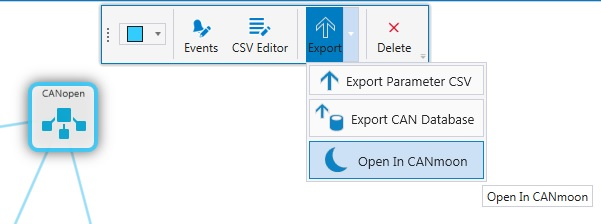
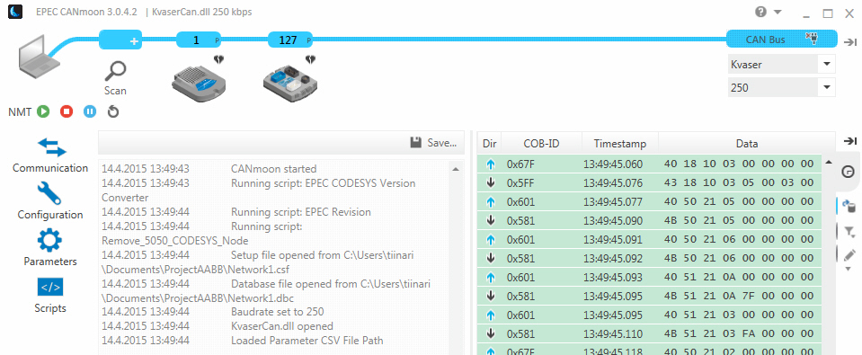

This function is enabled only if CANmoon 3.0.3.4 or newer is installed.
|
|
This function is enabled only if CANmoon 3.0.3.4 or newer is installed. |
MultiTool Creator networks can be opened directly to Epec CANmoon. The following settings are made for CANmoon:
Network devices are added with their node-IDs set in MultiTool Creator
The bit rate is set according to MultiTool Creator configuration
The parameter CSV file is opened to CANmoon Parameters section
The CAN Database is opened to show variable names in PDO messages
To open a network configuration in CANmoon:
1. Select a network in MultiTool Creator
2. Select Export > Open In CANmoon from the hover menu

3. The selected network opens in CANmoon
Network opened in CANmoon:
